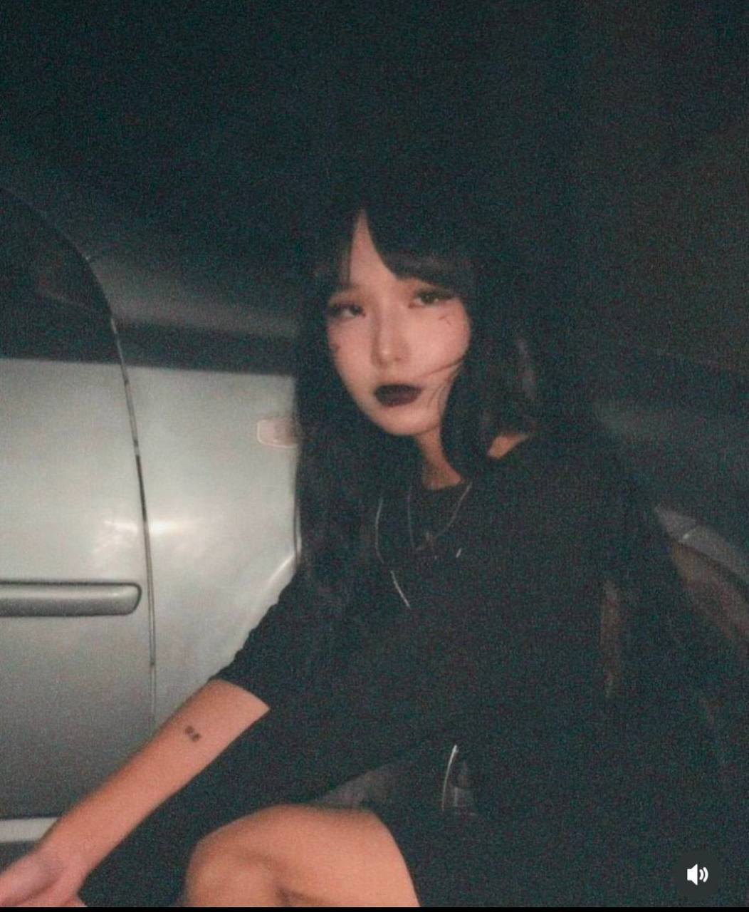
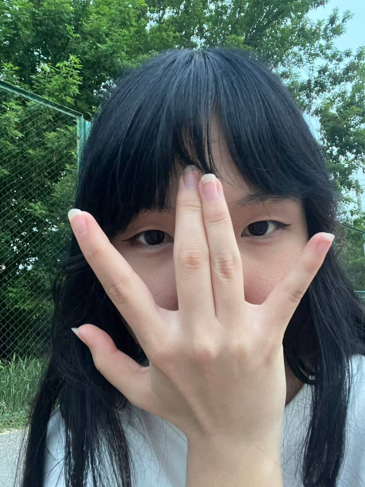
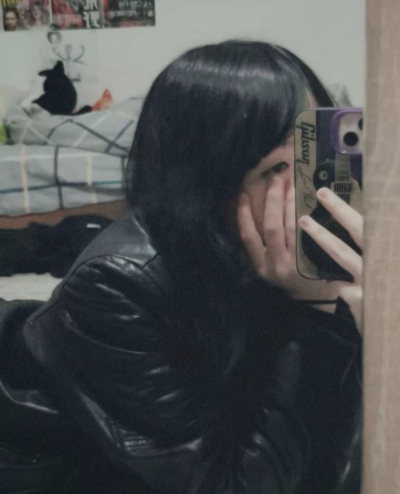

Я тогда придумал выкладывать себе в ТГ сторисы с вещами, которые тебе нравятся, в надежде, что ты напишешь мне, и на этот раз план снова сработал. Мы общались неделю, и когда я узнал, что у тебя снова новый парень, я решил на этот раз просто уйти и следующий год жаловался на тебя своим близким друзьям.
Ты даже не представляешь, сколько времени меня откачивали мои друзья после общения с тобой и сколько раз они слушали про тебя из моих уст.
Спустя долгое время я снова встретил тебя на празднике Наурыз и хотел вернуть общение, но я потерял тебя. Я тебя целый час искал, но так и не нашёл.
Летом же прошлого года я опять придумал какой-то план. Он был таков: я говорю твоему лучшему другу, который бы точно не сдержался и рассказал тебе, что я тебя люблю. Ты узнаёшь это и пишешь мне. План сработал, но на этот раз я опять опоздал. И опять у тебя был другой.
Но на этот раз я решил ждать. Я часто писал тебе, звал гулять и т.п., чтобы вызвать у тебя чувства, и у меня, кажется, сработало. Но всё лето я не мог избавиться от мыслей: «У неё есть парень, но она переживает, флиртует, общается со мной. Она ему изменяет».
Когда мы пошли на ДР Санжара, я узнал, что вы расстались, и решил подождать неделю, чтобы ты успела отдохнуть, но ты опять сошлась с ним.
Я думал, что всё кончено и больше я не буду с тобой общаться, но в той нашей гулянке ты сделала то, что полностью разрушило всё моё доверие к тебе. Ты сказала, что этим своим жестом извинилась за всю ту боль, что причинила мне. Мне было тяжело принять всё это, и я несколько месяцев чувствовал себя паршиво. По ночам я начал лежать в обнимку с подушкой, представляя тебя, и не мог забыть тебя.
В декабре я решил купить курсы истории, и каким-то образом мы с тобой оказались в одном потоке, и ты опять начала мне написывать. Я решил на этот раз просто наблюдать за тобой и не мешать тебе с Айбеком.
Но знаешь, как же я злился на тебя, когда ты рассказывала мне про него после всего, что было между нами. Было такое чувство, что ты меня никуда не ставишь и я для тебя просто игрушка.
В последний день 2025 года я сильно устал от тебя и просто заблокировал везде, где только можно. Так получилось, что нам пришлось поехать вместе на январский ЕНТ, и после этого ЕНТ во мне что-то ёкнуло, и я решил дальше постараться с тобой. Ты как раз сообщила о своём расставании с Айбеком.
Я позвал тебя гулять и настроился на 27 января, так как эта дата показалась мне очень красивой. Но когда узнал, что с нами будет наш общий друг, я передумал и считал, что всё кончено, но потом всё же решился.
Мы погуляли. После гулянки друг сказал, что ты хотела что-то мне сказать, и ты тогда начала говорить, что это уже неважно, а я просто отвёл тебя в сторону и признался тебе в любви, хотя ты всегда знала, что я люблю тебя.
Три дня я чувствовал себя самым счастливым человеком на свете, и когда ты говорила, что любишь меня, я просто кидал скрины друзьям и радовался как ребёнок, не зная, что отвечать на такие простые слова.
Я был счастлив ровно до того момента, как ты меня бросила, сказав, что не готова к отношениям. Я два дня просто плакал и не мог прийти в себя, и вдруг ты предлагаешь встречаться, и я согласился
Во время отношений, в самом их начале, я хотел быть с тобой всегда и везде. Я каждый день уходил со второго урока, чтобы встретить тебя после школы и побыть с тобой пару минут. Каждый день звал тебя гулять и просто был счастлив.
Но всё это время меня съедала моя тревожность и боязнь потерять тебя. Также я чувствовал себя плохим парнем, потому что не давал тебе того, что тебе давал Айбек. Я не мог позволить себе тратиться на хорошие свидания, постоянные подарки и ту заботу, которую он тебе давал.
Я считал, что недостоин тебя, и старался как мог. Я хотел подарить тебе весь мир и просто быть рядом с тобой.
Мне очень нравилась динамика наших отношений, и я думал, что у нас всё получится и никакие ссоры не проблема, если мы любим друг друга. Я так ценил каждую минуту, проведённую с тобой вместе, и мечтал о том, чтобы это продолжалось всегда.
Я всей душой любил тебя и, даже если не говорил, в голове строил с тобой будущее.


